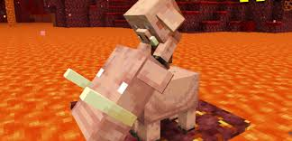

Minecraft is a sandbox video game developed by Mojang Studios. Minecraft was created by Markus "Notch" Persson in the Java programming language and was released as a public alpha for personal computers in 2009 before officially releasing in November 2011, with Jens Bergensten taking over development around then. It has since been ported to various platforms and is the best-selling video game of all time, with 200 million copies sold across all platforms and 126 million monthly active users as of 2020.
In Minecraft, players explore a blocky, procedurally-generated 3D world, and may discover and extract raw materials, craft tools, build structures or earthworks, and depending on game mode, can fight computer-controlled "mobs", as well as either cooperate with or compete against other players in the same world. These modes include a survival mode, in which players must acquire resources to build the world and maintain health, and a creative mode, where players have unlimited resources.
